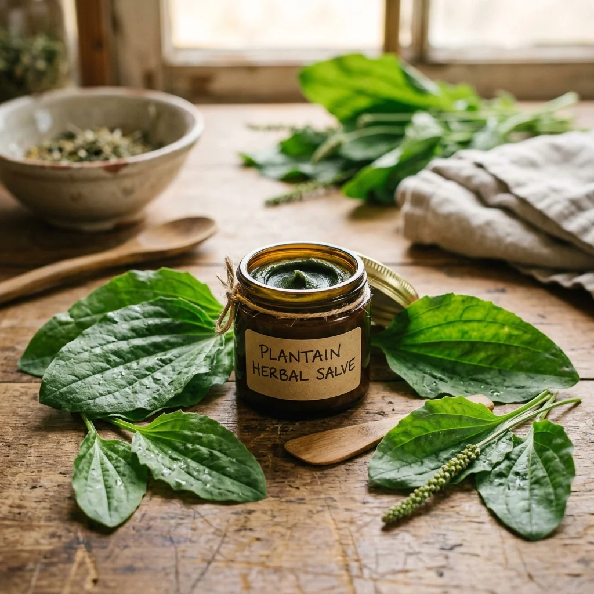

Carregando sabedoria ancestral...
Artículos Recomendados
 Remédios
34K
Remédios
34K
Pomada reparadora de cera de abelha e azeite
Formulação lipídica básica para regenerar áreas de extrema secura e fissuras utilizando apenas cera de opérculo derretida e azeite virgem extra.
 Remédios
27K
Remédios
27K
Xarope natural de tomilho e mel para tosse
Remédio da avó para aliviar a tosse, desobstruir os brônquios e acalmar a garganta irritada com uma infusão concentrada de tomilho selvagem e mel puro.

Remédios 25KPomada de arnica para dores musculares
Pomada antiinflamatória de arnica montana e cera de abelha pura, ideal para aliviar dores nas articulações, contusões e entorses.
Comentarios y Experiencias